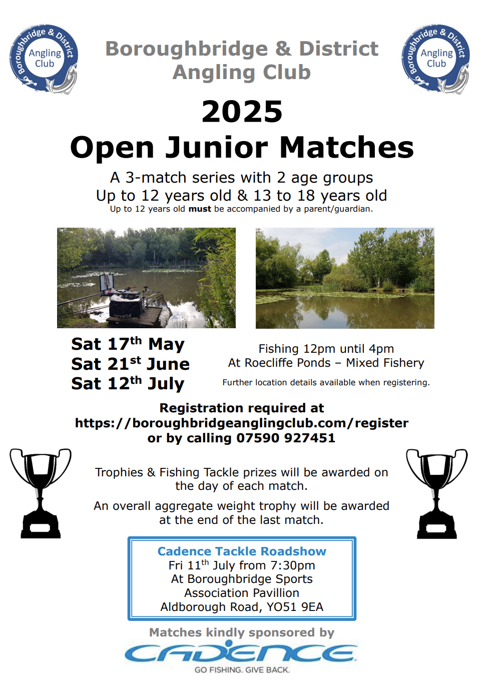
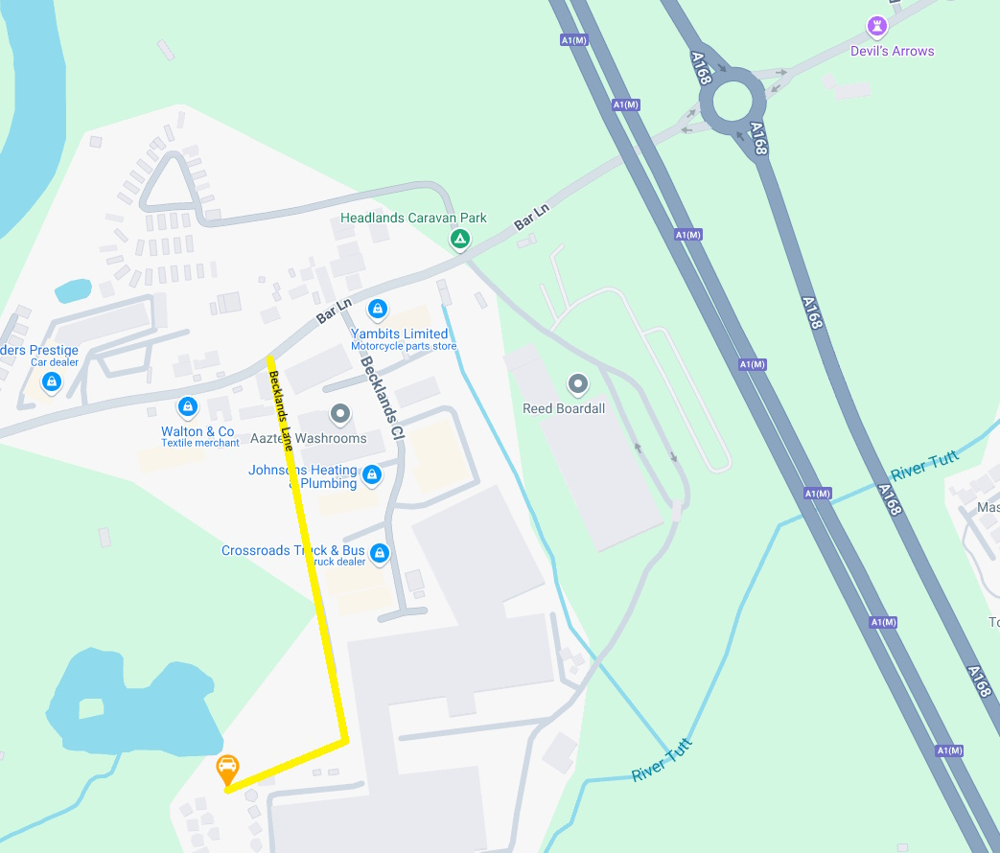

<div>

    <h1>Junior Open Matches</h1>

    <a routerLink="/registrations" style="font-size: 20px;">
        <button class="edit-button" mat-raised-button color="warn" style="color: white;" aria-label="register" >Register here for Junior Open Matches</button>
    </a>

    <br/>
    <br/>
    <mat-tab-group mat-align-tabs="start" animationDuration="0ms">
        <mat-tab label="Details">
            
        </mat-tab>
        <mat-tab label="Match Location">
            <h2>Roecliffe Pond</h2>
            <div _ngcontent-sqa-c173="">Entry is via Becklands lane on the left after Becklands Industrial Estate, then right at
                the end.
                <br/>
                <br/>
                <div _ngcontent-sqa-c173=""
                title="What 3 Words divides the world into 3 metre squares and gives each square a unique combination of three words. Clicking the link will open it on a map.">
                What 3 Words address for start of Becklands Lane: <ul _ngcontent-sqa-c173="">
                    <li _ngcontent-sqa-c173="" style="padding-left: 20px; margin-bottom: 0;" class="ng-star-inserted"><a
                            _ngcontent-sqa-c173="" target="_blank"
                            href="https://what3Words.com/cheaper.senses.sprayer?maptype=road">///cheaper.senses.sprayer</a>
                    </li><!--bindings={
                        "ng-reflect-ng-for-of": "[object Object]"
                    }-->
                </ul><br _ngcontent-sqa-c173="">
            </div>
                Park in the fenced-off area taking care not to obstruct the public footpath. 
            </div>
            <br/>
            <br/>
            
        </mat-tab>
        <mat-tab label="Pond/Match Rules">
            <h2>Pond/Match Rules</h2>
            <ul class="rule-list">
                <li>Anglers under 13 years of age <b>MUST</b> be accompanied by a parent/guardian</li>
                <li>Keep to the footpaths around the ponds. No trespassing from the paths as you will disturb the wildlife.</li>
                <li>NO DOGS allowed at ANY TIME as they will disturb the wildlife.</li>
                <li>NO night fishing (after daylight).</li>
                <li>NO boilies, boilie derivatives or wafter baits to be used at any time.</li>
                <li>NO floating baits, pop ups baits or bread.</li>
                <li>NO artificial baits.</li>
                <li>Pellets must be fishmeal only.</li>
                <li>NO camping or fires of any kind.</li>
                <li>NO fish to be taken for any purpose.</li>
                <li>Fishing from permanent pegs only.</li>
            </ul>
        </mat-tab>
    </mat-tab-group>
</div>


